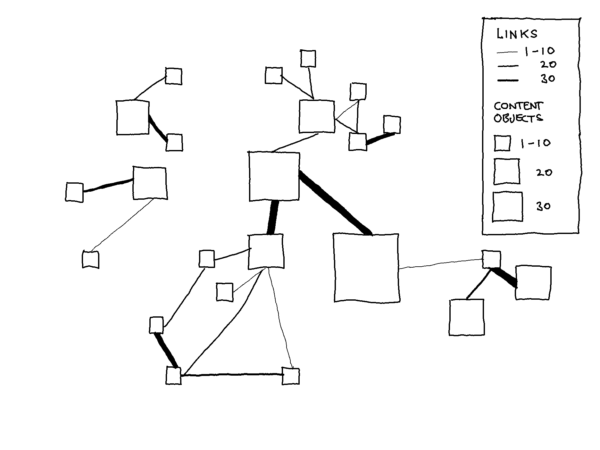
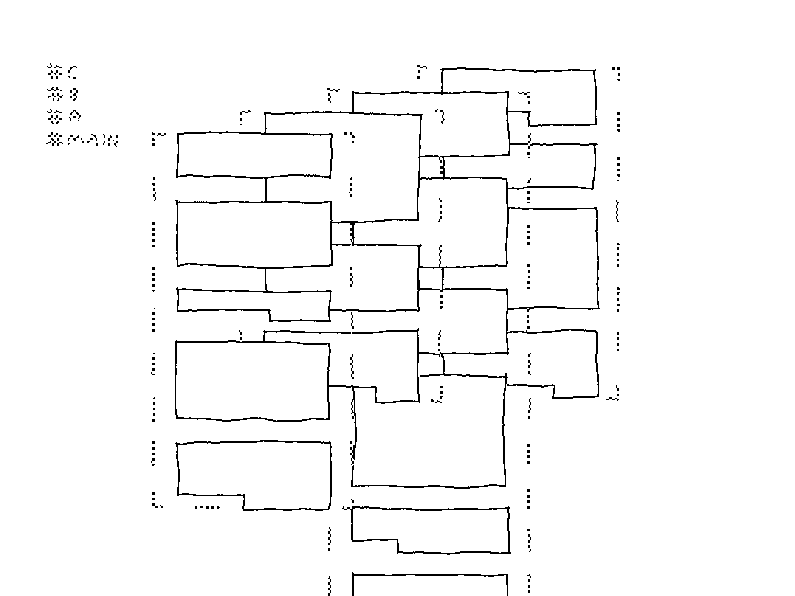

Designing the Construct: Components and View Modes
View modes are different levels of perspective on documents. In addition, the two view modes differ in the components used for representing the concept of a document.
- Inventory View
- At the level of the collection.
- Two-dimensional node-link diagram.
- Displays quantity of connections between documents.
- Stack View
- At the level of a selection of the collection.
- Three-dimensional layers.
- Displays selection of connections and distinct connection types.
- Merge Mode
- At the level of content objects.
- Two-dimensional frame.
- Displays connections side-by-side or sequentially.
1. Inventory View

In this view mode the entire inventory is visible and represented as a diagram in which a node denotes a document and a link denotes connections of varying types (specified below).
Node
The size of a node reflects the number of content objects it contains (i.e. the size of the document).
Link
The thickness of a link reflects the number of links between the content objects across documents.
As seen in the image above, from Inventory View it is possible to select nodes to create a stack and enter Stack View.
2. Stack View
A stack is made up of a set of documents represented as layers that contain content objects.
Stack
A stack can be thought of as a workspace. The inventory in its entirety may contain complex layers of information, and so creating stacks is a convenient method for engaging with complexity by making a selection of which to view in more detail.
Layer
The concept of a document is represented as a layer, which instead of having a single title, has a single tag and appropriates its functionalities. In the image below there are four layers: #MAIN, #A, #B, and #C.
Content Object
Content objects are the parts that make up a text, of which there are many types: paragraphs, lists, emphatic phrases, titles, quotes, comments and so on. A content object can have any number of tags, placing it in multiple layers.

Link Types
In the image below there are several links between the layers. As defined in the previous entry, there are two general types of connections that cross the boundaries of documents: those that are transclusions (identical extracts in separate documents), and those that are not. In the image below, these two types are visually distinguished by dot-line-dot links and side-surface links.
✱ it is important that these are visually distinguished but the visualization is subject to change.
For the links that are not transclusions, these are categorized according to whichever taxonomy people wish to develop within the construct, hence the appropriation of a tagging system. By example, in the image below, if content object ID_P2 is a comment on content object ID_P1, then the layer could be tagged #COMMENTS. If the other two layers are separate references, these layers could be tagged #REFERENCE_X and #REFERENCE_Y.
It is also possible to display links only between a selection of layers in the stack. Upon selection, the stack is rearranged. In the two images below the layers #MAIN and #COMMENTS are selected, displaying the links between them, followed by stack rearrangement.
While in Stack View it is possible to merge all or a selection of layers. The arrangement of the stack will determine how the layers are merged.
3. Merge Mode
In the image below, #MAIN and #COMMENTS are merged side by side.
In the image below, only the linked content objects (between #MAIN and #COMMENTS) are displayed side by side.
The image below shows the option for merging the content objects sequentially. If another layer was included, the order would depend on the arrangement of layers in Stack View.